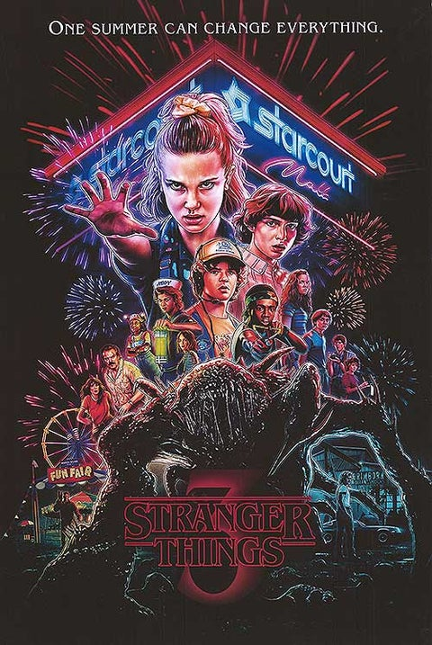

《怪奇物語》（英語：Stranger Things）
是一部由杜夫兄弟創作的美國科幻恐怖影集，於2016年7月15日在Netflix首播。
該劇講述一名小男孩失蹤後，一位有超能力的女孩幫男孩的朋友尋找男孩的下落，而男孩的哥哥與小鎮警署的警長也各自展開他們的調查。
本劇將時間點設在1980年代的印地安納州，其劇情、演出與配樂都向80年代的經典電影及影集致敬，如史蒂芬·史匹柏、約翰·卡本特、
史蒂芬·金和喬治·盧卡斯等等，[5]因而本劇播出後獲得了極高的評價。
目前已播出三季，並預計延續至第四季或第五季完結。第四季預計在2022年春季播出。
故事發生在1980年代，位於美國印第安納州的一座虛構城鎮霍金斯鎮（英語：Hawkins），鎮上的一座美國能源部名下的政府實驗室，
涉及著跟超常現象跟超自然現象有關的機密實驗，當中還包含許多不為人知的人體實驗樣本。實驗人員在無意間開啟一條通往稱作「顛倒世界」
的另一維度之傳送門，該維度所造成的危害隨著時間推及而波及到霍金斯鎮上的市民。